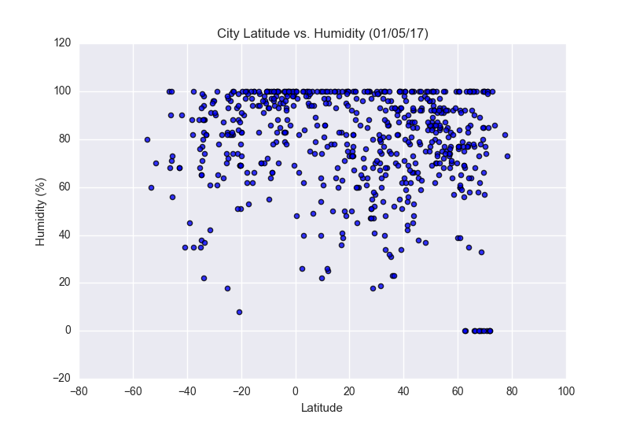
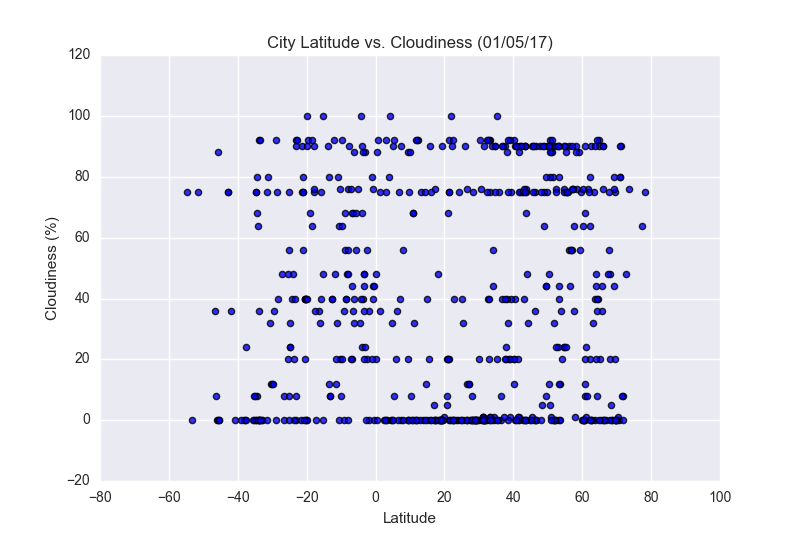

How does weather change closer to the equator?
Weather for hundreds of world cities, collected from the OpenWeatherMap API and analysed against latitude — with regression by hemisphere to separate real patterns from noise.
Interactive
Explore latitude vs. weather
Every point is a city — hover or tap for details. Lines are least-squares fits for each hemisphere.
Results
What the data shows
Calculated live from the dataset: correlation (r), variance explained (R²) and significance (p) for each hemisphere.
Original Matplotlib figures
Visualizations
Each figure has its own page with analysis.




How it was done
Methodology
Collect
Generated a random sample of world cities and requested current weather for each from the OpenWeatherMap API.
Clean
Loaded responses into Pandas, removed duplicates and invalid records, and saved the results to CSV.
Visualise
Plotted temperature, humidity, cloudiness and wind speed against latitude with Matplotlib.
Analyse
Fitted linear regressions per hemisphere and reported r, R² and p-values to judge strength and significance.
Full statistics
| Variable | Cities | n | r | R² | Slope / °lat | p-value | Strength |
|---|---|---|---|---|---|---|---|
| Calculating… | |||||||